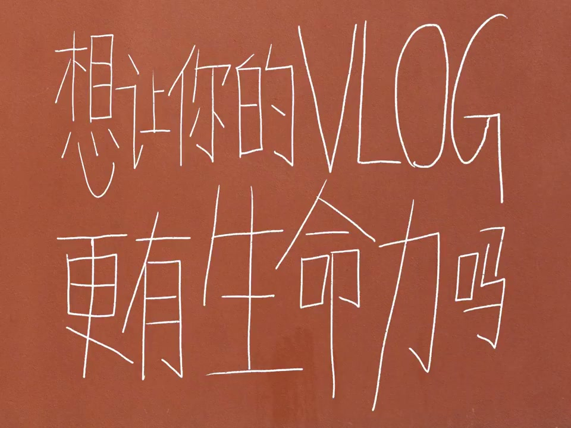
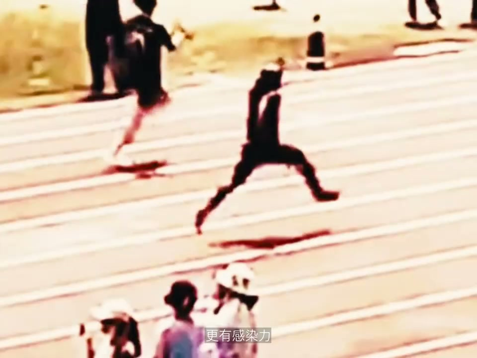
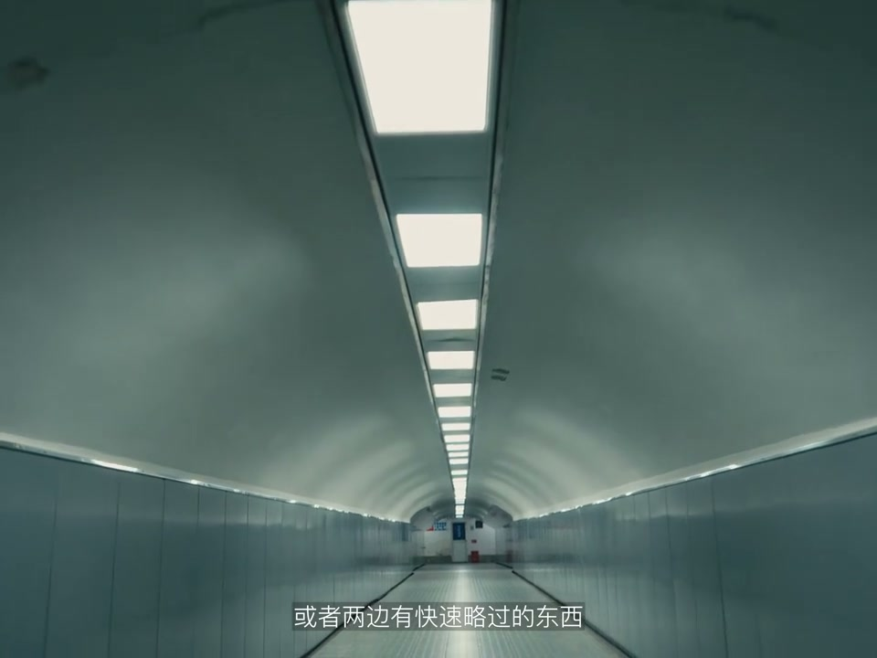
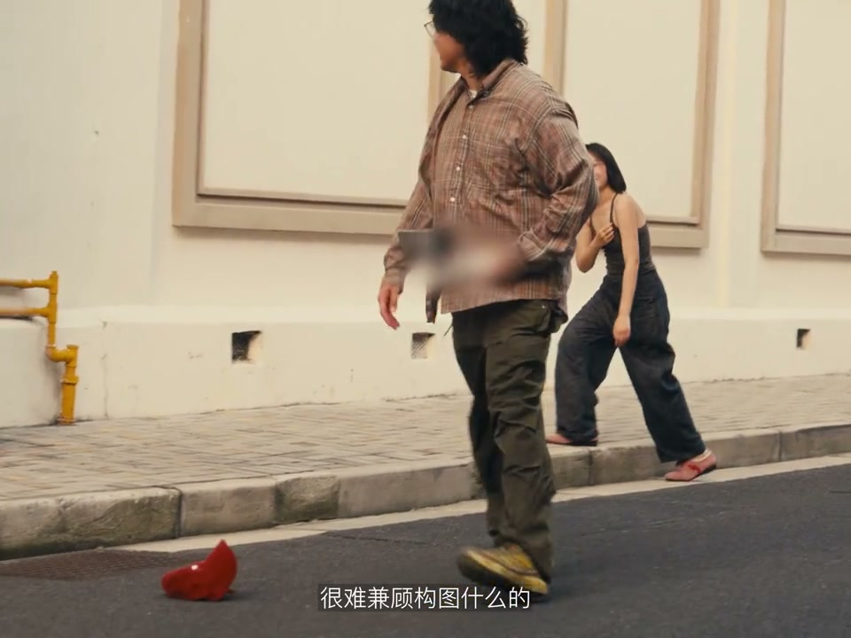
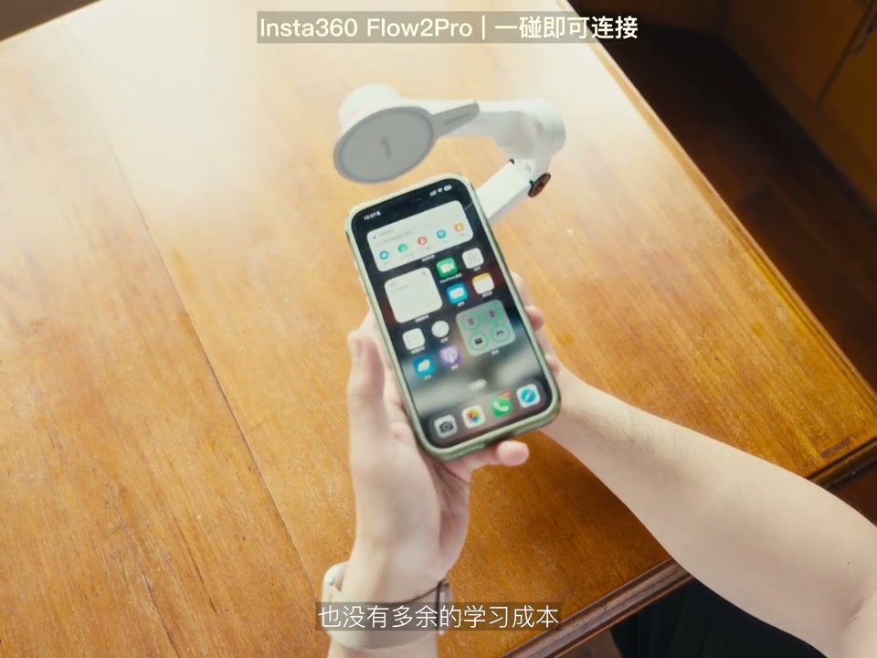

01
中文
想要让你的Vlog更有生命力？
EN
Want your vlog to have more vitality?
表达提示more vitality（更有生命力）

Scene English · Vlog · 奔跑生命力
Run! Give Your Vlog More Vitality!
🎧 语音讲解
Opening: want your vlog to have more vital…
情境跑起来是给Vlog注入生命力的关键动作。
想要让你的Vlog更有生命力？
Want your vlog to have more vitality?
表达提示more vitality（更有生命力）
生命力，想要嘛？很简单，跑起来，跑起来就可以了。
Vitality? Simple. Just run!
表达提示just run（跑起来）
more vitality（更有生命力
just run（跑起来

The appeal of running: driving music, quic…
情境长焦加参照物让奔跑有速度感。
在剪辑的时候需要进一段激情音乐，但总感觉很突兀。
Cutting in a passionate track often feels abrupt.
表达提示feels abrupt（感觉突兀）
前后快速略过的参照物会显得你跑得更快。
Objects passing quickly make you look faster.
表达提示reference objects（参照物）
长焦带来的空间压缩会让前后景看起来离你更近。
Telephoto's space compression brings front and back closer.
表达提示space compression（空间压缩）
准备一块ND滤镜，尽量让快门速度的分母不要超过帧率的两倍。
Bring an ND filter and keep the shutter within double the frame rate.
表达提示ND filter（ND滤镜）
feels abrupt（感觉突兀
reference objects（参照物

The efficient shooting tool: but even with…
情境Insta360 Flow 2 Pro解决跟拍难题。
如果你是像这样手指跟拍的话，肯定会晃得人都不知道在哪里。
Hand-following by finger shakes wildly.
表达提示shaky follow（手指跟拍晃）
它可以在长焦下追踪人，并且有东西挡住人也不会丢。
It tracks people at telephoto and doesn't lose them when blocked.
表达提示keeps tracking（追踪不掉）
把手机吸上去就可以直接开拍，也没有多余的学习成本。
Magnet-mount the phone and shoot—no learning curve.
表达提示no learning curve（零学习成本）
shaky follow（手指跟拍晃
keeps tracking（追踪不掉

Avoiding expression management: but starin…
情境遮挡脸部角度+多人奔跑规避表情管理。
我们在跑的时候很难做好表情管理。
It's hard to manage expressions while running.
表达提示expression management（表情管理）
我们可以穿插一些看不到脸的角度，像跟脚步或者跟背影都可以。
Cut in face-hiding angles like feet or a back view.
表达提示hide the face（看不到脸）
有时候人数就是和生命力成正比。
Headcount often equals vitality.
表达提示numbers equal life（人数成正比）
它可以一键360度反拍，还可以用来拍全景照片。
It offers one-key 360° reverse shots and panoramas.
表达提示360° reverse（360反拍）
hide the face（看不到脸
numbers equal life（人数成正比

Changing the rhythm and conclusion: but a …
情境制造情绪抽离世界来改变奔跑节奏。
我们不可能一直跑下去吧？这时候该怎么打断或者说改变节奏呢？
We can't run forever—how do you break or shift the rhythm?
表达提示break the rhythm（打断节奏）
最简单的方法就是制造一个把高昂情绪抽离出来的世界。
The simplest way: create a world that pulls the high emotion out.
表达提示pull the emotion（抽离情绪）
一次奔跑可以包含很多东西：压抑的释放、青春的自由、离别的不舍。
One run can hold release of pressure, freedom of youth, reluctance of parting.
表达提示a run holds much（奔跑的承载）
break the rhythm（打断节奏
pull the emotion（抽离情绪
说跑起来的作用
说长焦与参照物
说ND与快门
说稳定器选择
说表情规避
缺个带情绪的镜头。
没参照物无速度感。
白天要ND控快门。
手跟拍晃到没法看。
全程盯脸没生命力。